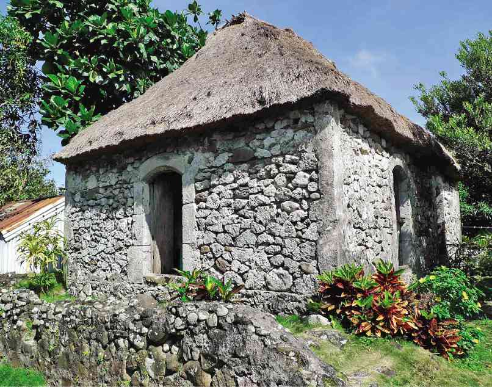

Batanes
Batanes is an island province in the Philippines, located in the northernmost part of the country. It is known for its stunning natural beauty, including its white-sand beaches, rolling hills, and lush forests. The Batanes people are a group of indigenous people who have inhabited the islands for centuries. They are known for their rich culture and traditions.
History
Pre-colonial era SAMPLE CHANGE
The Batanes people are believed to have descended from the Austronesians who migrated to the Philippines from Southeast Asia around 2,000 years ago. The Batanes people developed a unique culture that was adapted to the harsh environment of the islands. The Batanes people were skilled fishermen and farmers, and they also developed a rich tradition of weaving and wood carving.
Spanish colonial era sAMPLE CHANGE VERSION 3
The Spanish arrived in the Batanes in the 17th century and began to colonize the islands. The Batanes people were initially resistant to Spanish rule, but they eventually submitted to Spanish authority. The Spanish attempted to convert the Batanes people to Christianity, but they were largely unsuccessful. The Spanish also imposed taxes on the Batanes people, which led to a number of rebellions.
American colonial era
The Americans arrived in the Batanes in the late 19th century and defeated the Spanish in the Spanish-American War. The Americans continued to rule the Batanes until 1946. The Americans introduced a number of changes to Batanes society, including the introduction of schools and hospitals. The Americans also built roads and bridges that made it easier for people to travel in and out of the province.
Post-colonial era
The Philippines gained independence from the United States in 1946. Since then, Batanes has been a part of the Philippines. The province has continued to develop and grow, and it is now a popular tourist destination.
Culture
Batanes culture is based on a deep respect for nature and the spirits of their ancestors. The people believe that they are connected to everything in the natural world, and they have developed a complex system of rituals and ceremonies to maintain this connection. The Batanes people are also skilled artisans, and they are known for their wood carvings, pottery, and weaving.
Ivatan Houses
Etiquettes
When visiting Batanes, it is important to be respectful of the local culture and traditions. Here are a few tips:
- Dress modestly. Cover your shoulders and knees, and avoid wearing revealing clothing.
- Be respectful of elders. Elders are held in high esteem in Batanes culture, and it is important to treat them with respect.
- Avoid pointing or using harsh language. Batanes people are generally polite and respectful, and it is important to reciprocate this attitude.
- Ask permission before taking photos. It is considered rude to take photos of people without their permission.
- Do not touch people or their belongings without permission. Batanes people are generally private, and it is important to respect their privacy.
- Offer gifts. If you are invited to someone's home, it is polite to bring a gift of food or drink.
- Be patient. Batanes people are generally laid-back and relaxed, so don't expect things to happen quickly.
By following these tips, you can help ensure that you have a positive and respectful experience when visiting Batanes.
Additional Information
- The Batanes people are a hospitable people, and they are always happy to welcome visitors to their islands.
- There are a number of festivals and celebrations that take place in Batanes throughout the year.
- The province is home to a number of stunning natural attractions, including Sabtang Island, Basco Lighthouse, and Vayang Rolling Hills.
- Batanes is a great place to go for hiking, swimming, and fishing.
I hope this information is helpful.